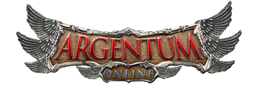
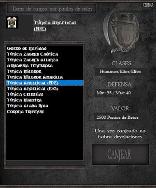
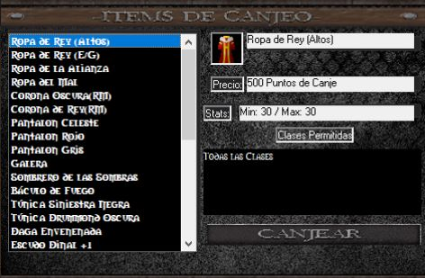
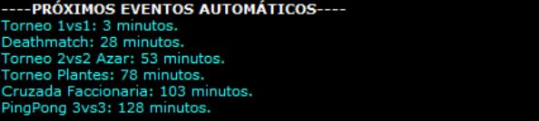

SO:
Windows 7, 8, 10 o superior (64 bits)
ALMACENAMIENTO:
1GB Espacio Libre
MEMORIA RAM:
2GB RAM

Windows 7, 8, 10 o superior (64 bits)
1GB Espacio Libre
2GB RAM
Bienvenido a las tierras de TrhynumAO, comenzarás siendo newbie y spawnean en la zona de leveo. Hasta no ser 45 no serás liberado de ahí, tendrás que subir de nivel con los muñecos de entrenamiento.
También podes resetear el personaje hasta nivel 17, el comando es /RESET.
Una vez que llegas a nivel 45 serás sumoneado en Ullathorpe, ahí comenzará tu aventura. En esta ciudad podrás equiparte y prepararte para la batalla.
A partir de acá sos libre de poder agitar en nuestro servidor, tenemos sistemas de eventos automáticos, sistemas de retos y sistemas de misiones para obtener mejores items y convertirte en el jugador más temido del servidor.
Podes encontrar tres tipos de retos:
Para jugar 1vs1 o 2vs2 fast deberás dirigirte a la zona de retos y dungeon's, ahí parandote en las sangres correspondientes podrás ingresar a jugar un reto.
A diferencia de los fast, el reto por puntos de canje es en la ciudad de Ullathorpe y con el comando /APUESTA NICK CANTIDAD enviarán una solicitud para jugar un reto por puntos de canje, ambos deben tener la cantidad a apostar.
(En caso de ser nombre compuesto utilizar /APUESTA EL+CAPO 5, es decir, usando un + donde iria el espacio)
Los retos 1vs1 y 2vs2 fast te darán puntos de reto, estos puntos de reto son acumulables y podes verlos clickeando tu personaje, los mismos pueden ser canjeados por túnicas o gorros un poco mejores que los items normales.

Los puntos de canjes se pueden obtener:
Estos puntos son con los que podrás conseguir items muchísimo más fuertes que los que venden los NPC's.

Existe un ciclo de eventos automáticos el cual es de la siguiente forma:
Además de estos eventos automáticos se realizan eventos por los GM's los cuales suelen tener premios más grandes.
También la cantidad de canjes que dan los eventos automáticos depende de la cantidad de usuarios que ingresen a los mismos.
Para saber cuanto tiempo falta para que se realicen podes verificarlo in-game apretando en la interfaz el botón "Tiempos" o escribiendo /TIEMPOS.

Para poder ingresar al castillo de clanes deberás tener un clan o pertenecer a uno.
Este castillo una vez que lo dominas cada 30 minutos te da 10 puntos de canje por mantenerlo dominado.
La isla faccionaria te paga 2 canjes cada 30 minutos, es para las facciones exclusivamente, los neutrales no podrán ingresar.
/SOPORTE te abre el formulario para enviar tu duda o consulta.